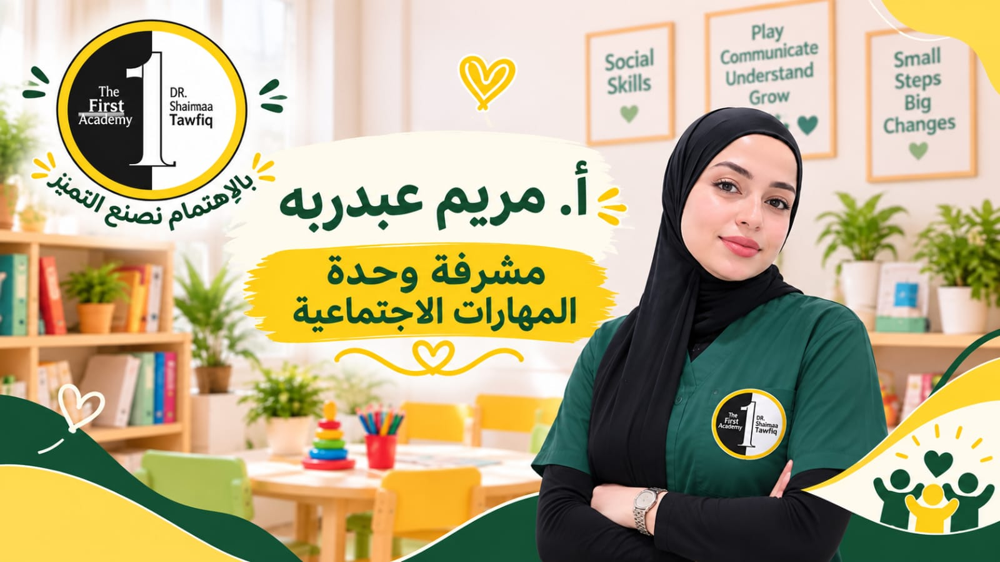

فرست للمهارات الاجتماعية
الصداقة مش موهبة بتتولد مع الطفل، دي مهارة زي أي مهارة تانية، وبنعلمّها له خطوة خطوة.

أ. مريم عبدربه
⭐ مشرفة وحدة المهارات الاجتماعية وأخصائية التواصل والتفاعل الاجتماعي🎓 المؤهلات والخبرات المهنية
- حاصلة على ليسانس الآداب – قسم علم الاجتماع
- حاصلة على دورة الأسس العلمية في التربية الخاصة
- حاصلة على تدريبات متخصصة في برامج: RDI – Relationship Development Intervention، وToM – Theory of Mind، وBoys Town
- خبرة عملية تتجاوز 4 سنوات في مجال التربية الخاصة
متخصصة في مجال تنمية المهارات الاجتماعية والتواصل والتفاعل الاجتماعي لدى الأطفال والمراهقين، مع خبرة في تطبيق ومتابعة البرامج المتخصصة RDI وToM وBoys Town، وتوظيفها وفقًا للاحتياجات الفردية والمستويات النمائية لكل حالة.
تعمل على تنمية مجموعة من المهارات، تشمل الوعي الاجتماعي، وفهم المشاعر والنوايا، والتواصل المتبادل، والمرونة المعرفية والاجتماعية، وتنظيم السلوك، وبناء العلاقات والتفاعل الإيجابي مع الآخرين.
برامج الوحدة
برنامج تدريب المهارات الاجتماعية
Boys Town Social Skills Trainingهو برنامج تدريبي وتربوي يهدف إلى تنمية المهارات الاجتماعية والسلوكية لدى الأطفال والمراهقين، ومساعدتهم على اكتساب السلوكيات اللازمة للتفاعل الإيجابي مع الآخرين والنجاح في المواقف اليومية، سواء في المنزل أو المدرسة أو المجتمع.
برنامج تطوير العلاقات الاجتماعية RDI
Relationship Development Interventionهو برنامج علاجي وتربوي يهدف إلى تنمية العلاقات الاجتماعية والتواصل العاطفي لدى الأطفال، خصوصًا الذين يعانون من اضطرابات في التواصل مثل التوحد أو الفقر البيئي.
يركز RDI على تطوير المرونة الاجتماعية وقدرة الطفل على التكيف مع التغيير، وتحفيزه لاكتشاف العالم من خلال العلاقة الآمنة مع الآخر. ويُنفذ البرنامج بشكل تدريجي من خلال مستويات تبدأ من بناء الانتباه المشترك وصولًا إلى العلاقات المتبادلة المعقدة. ويساعد الطفل على فهم الأدوار الاجتماعية، والمشاركة، والتعاون، وتنظيم الذات.
برنامج نظرية العقل
Theory of Mind (ToM)هو برنامج علاجي وتربوي يهدف إلى تنمية قدرة الطفل على فهم الحالات العقلية والانفعالية للآخرين، مثل المشاعر، والرغبات، والأفكار، والمعتقدات، وكيف تؤثر هذه الحالات في سلوك الفرد وتفاعلاته الاجتماعية.
يركز البرنامج على تطوير الفهم الاجتماعي وقدرة الطفل على تفسير سلوك الآخرين والتنبؤ بتصرفاتهم، وفهم أن لكل شخص أفكارًا ومشاعر ووجهات نظر قد تختلف عن أفكاره ومشاعره.
ويُنفذ البرنامج بشكل تدريجي من خلال مستويات تبدأ من التعرف على المشاعر الأساسية وفهمها، وصولًا إلى فهم وجهات النظر المختلفة، والنوايا، والرغبات والمعتقدات، بما يساعد الطفل على بناء تفاعلات اجتماعية أكثر وعيًا وفاعلية.